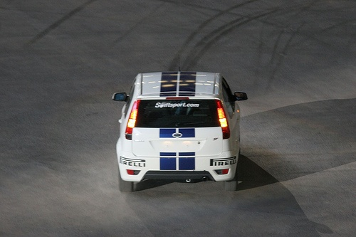
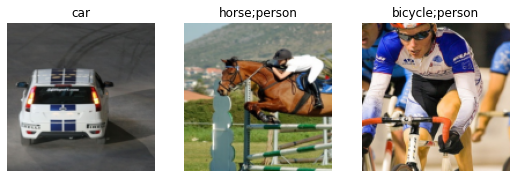
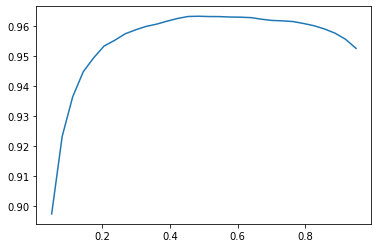

from fastai.vision.all import *
from tips.plot import plot_pil_images
from nbdev.showdoc import *Multi-label classification
PASCAL 2007 dataset
Multi-label classification is a classification task where each sample can be assigned to multiple classes. This is different from multi-class classification where each sample can only be assigned to one class. Here I’ll follow FastAI’s book, chapeter 6.
First let’s get the dataset:
path = untar_data(URLs.PASCAL_2007)Let’s take a look at the data, this dataset has a csv file with the info:
df = pd.read_csv(path/'train.csv')
df.head()| fname | labels | is_valid | |
|---|---|---|---|
| 0 | 000005.jpg | chair | True |
| 1 | 000007.jpg | car | True |
| 2 | 000009.jpg | horse person | True |
| 3 | 000012.jpg | car | False |
| 4 | 000016.jpg | bicycle | True |
so we have filename, label (which is in fact multi-label) and is_valid (True if we want it in validation set, probably useful for bencharmarking since this info is not necceseary).
The dataset also has segmentation masks (for 422 out of 5011 images). No need for that now but good to know.
DataBlock preparation
DataBlock is fastai type that is used to create fastais Datasets and DataLoaders (which themselves are wrappers for PyTorch Dataset and DataLoader). Let’s get to know it:
data_block = DataBlock()One can create datasets from pandas dataframe:
datasets = data_block.datasets(df)type(datasets)fastai.data.core.DatasetsDatasets have train and valid parameters:
datasets.train[0](fname 009464.jpg
labels cat
is_valid True
Name: 4754, dtype: object,
fname 009464.jpg
labels cat
is_valid True
Name: 4754, dtype: object)but a text format is not useful for training. We can provide a get_x and get_y functions to DataBlock to get the data and labels:
def get_x(r):
return path / 'train' / r['fname']
def get_y(r):
return r['labels'].split()
datablock = DataBlock(blocks=[ImageBlock, MultiCategoryBlock],
get_x=get_x, get_y=get_y)
datasets = datablock.datasets(df)datasets.train[0](PILImage mode=RGB size=500x375,
TensorMultiCategory([0., 0., 0., 0., 0., 1., 0., 0., 0., 0., 0., 0., 0., 0., 1.,
0., 0., 0., 0., 0.]))This looks better, since now we have image and a MultiCategory label. It is one hot encoded since we can have more then 1. or 0 for that matter. Let’s also use the splitter that will use the is_valid column:
def splitter(df):
train = L(df.index[~df['is_valid']].tolist())
valid = L(df.index[df['is_valid']].tolist())
return train, validdef get_x(r):
return path / 'train' / r['fname']
def get_y(r):
return r['labels'].split()
data_block = DataBlock(blocks=[ImageBlock, MultiCategoryBlock],
splitter=splitter,
get_x=get_x, get_y=get_y)
datasets = data_block.datasets(df)
datasets.train[0](PILImage mode=RGB size=500x333,
TensorMultiCategory([0., 0., 0., 0., 0., 0., 1., 0., 0., 0., 0., 0., 0., 0., 0.,
0., 0., 0., 0., 0.]))We used splitter as a method, previously we used RandomSplitter()and dozen more (see doc below):
doc(RandomSplitter)RandomSplitter
RandomSplitter(valid_pct=0.2, seed=None)
Create function that splits `items` between train/val with `valid_pct` randomly.
We can get vocabulary of all classes (there are 20):
print(datasets.vocab)
print(len(datasets.vocab))['aeroplane', 'bicycle', 'bird', 'boat', 'bottle', 'bus', 'car', 'cat', 'chair', 'cow', 'diningtable', 'dog', 'horse', 'motorbike', 'person', 'pottedplant', 'sheep', 'sofa', 'train', 'tvmonitor']
20For example, the 0th training sample looks like this:
datasets.train[0][0]
idxs = datasets.train[0][1] == 1
print(idxs)
datasets.vocab[idxs]TensorMultiCategory([False, False, False, False, False, False, True, False,
False, False, False, False, False, False, False, False,
False, False, False, False])(#1) ['car']so far so good. We can also use torch.where:
idxs = torch.where(datasets.train[0][1] == 1.0)[0]
print(idxs)
datasets.vocab[idxs]TensorMultiCategory([6])(#1) ['car']We need to resize all the images to the same size, PyTorch can’t store tensors otherwise, the min_scale
datablock = DataBlock(blocks=[ImageBlock, MultiCategoryBlock],
get_x=get_x, get_y=get_y,
splitter=splitter,
item_tfms=RandomResizedCrop(128, min_scale=0.35))
datasets = datablock.datasets(df)finally, let’s create fastai DataLoaders as well (won’t shuffle just yet):
dls = datablock.dataloaders(df, shuffle=False)dls.show_batch(nrows=1, ncols=3) # with min_scale = 0.35
min_scale controls the zoom, too low number (like 0.1) zooms and threatens to crop too much. Let’s stick with 0.35.
Training
First we define the model with dataloaders and model (optimizer and loss will be assigned automatically for now):
learn = vision_learner(dls, resnet50)/usr/local/lib/python3.9/dist-packages/torchvision/models/_utils.py:208: UserWarning: The parameter 'pretrained' is deprecated since 0.13 and will be removed in 0.15, please use 'weights' instead.
warnings.warn(
/usr/local/lib/python3.9/dist-packages/torchvision/models/_utils.py:223: UserWarning: Arguments other than a weight enum or `None` for 'weights' are deprecated since 0.13 and will be removed in 0.15. The current behavior is equivalent to passing `weights=ResNet50_Weights.IMAGENET1K_V1`. You can also use `weights=ResNet50_Weights.DEFAULT` to get the most up-to-date weights.
warnings.warn(msg)
Downloading: "https://download.pytorch.org/models/resnet50-0676ba61.pth" to /root/.cache/torch/hub/checkpoints/resnet50-0676ba61.pthThe warnings are becuase vision_learner still uses 0.13 version of torchvision. Not a big deal for now.
!pip show torchvisionName: torchvision
Version: 0.13.0+cu116
Summary: image and video datasets and models for torch deep learning
Home-page: https://github.com/pytorch/vision
Author: PyTorch Core Team
Author-email: soumith@pytorch.org
License: BSD
Location: /usr/local/lib/python3.9/dist-packages
Requires: numpy, pillow, requests, torch, typing-extensions
Required-by: fastai, sentence-transformersI have to send the model to the device not sure why is this not automatic as with dataloaders:
device = torch.device("cuda") if torch.cuda.is_available() else torch.device("cpu")
learn.model = learn.model.to(device)Let’s first see what we get as an output after predicitons:
x,y = dls.train.one_batch()
activations = learn.model(x)
activations.shapetorch.Size([64, 20])This makes sense, each item in a batch will predict a one-hot list of 20 classes. So waht loss type should we use? The answer is BinaryCrossEntropy, and that’s the one fastai assigns automatically:
learn.loss_funcFlattenedLoss of BCEWithLogitsLoss()BCEWithLogitsLoss is used since there is last layer in resnet18 is not sigmoid but linear layer with 20 outputs:
learn.model[-1][-1]Linear(in_features=512, out_features=20, bias=False)Let’s also add a metric, accuracy_multi is the one we need and we should pass sigmoid=True since we want to convert logits to probabilities and let’s have lower threshold:
accuracy_multi??Signature: accuracy_multi(inp, targ, thresh=0.5, sigmoid=True)
Source:
def accuracy_multi(inp, targ, thresh=0.5, sigmoid=True):
"Compute accuracy when `inp` and `targ` are the same size."
inp,targ = flatten_check(inp,targ)
if sigmoid: inp = inp.sigmoid()
return ((inp>thresh)==targ.bool()).float().mean()
File: /usr/local/lib/python3.9/dist-packages/fastai/metrics.py
Type: functionlearn = vision_learner(dls, resnet50, metrics=partial(accuracy_multi, thresh=0.2))learn.fine_tune(3, base_lr=3e-3, freeze_epochs=3)VSCode doesn’t show the progress bar sometimes unfortunately.
Let’s get the predictions:
preds, targets = learn.get_preds()
0.00% [0/40 00:00<?]
preds.shapetorch.Size([2510, 20])targets.shapetorch.Size([2510, 20])we can now plot accuracy for differnt thresholds (we use sigmoid=False since we already got probabilities via get_preds):
xs = torch.linspace(0.05, 0.95, 30)
accs = [accuracy_multi(preds, targets, thresh=i, sigmoid=False) for i in xs]
plt.plot(xs, accs)
So the max accuracy is:
max_idx, max_val = max(enumerate([float(x) for x in accs]), key=lambda x: x[1])
xs[max_idx], max_val(tensor(0.4845), 0.9633266925811768)for threshold=0.48.
And this is it for multi-label classification.